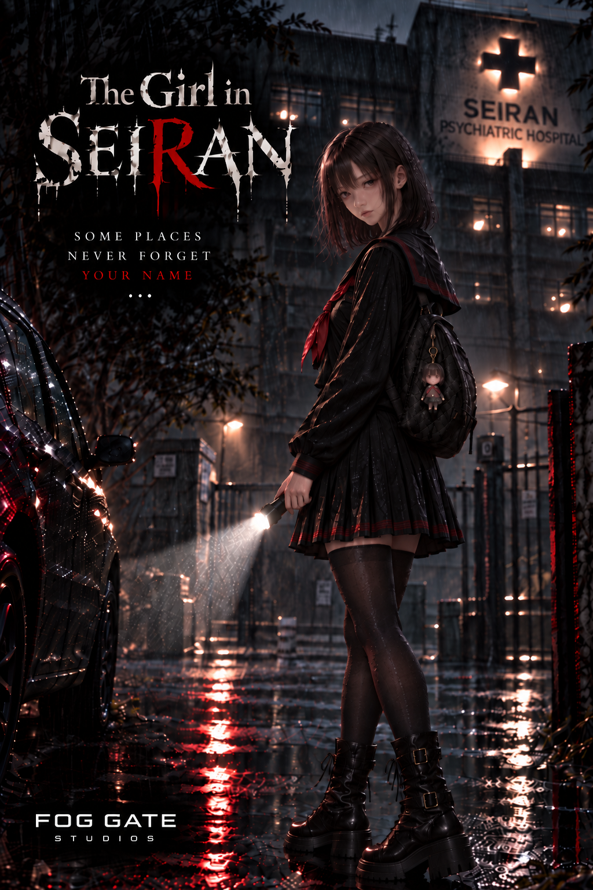

Atmosphere first
Lighting, sound, environments and pacing come together to create places with a presence of their own.
FOG GATE STUDIOS · INDEPENDENT STUDIO
Atmospheric horror, quietly crafted. Stories built around silence, identity and the things that remain.
01 · The studio
We are a small studio focused on building distinctive worlds with a strong visual identity and an emotional core.
We believe memorable games are not only played — they are felt.
Every scene, sound and silence should serve a purpose.Lighting, sound, environments and pacing come together to create places with a presence of their own.
Our stories begin with characters — their fears, memories, choices and the consequences they carry.
We want players who look closer, read between the lines and explore to discover more than the obvious path.
02 · Our games
The Girl in Seiran is our debut project — a story-driven psychological horror experience currently in active development.

In developmentFOG GATE STUDIOS · DEBUT TITLE
“Some memories should stay buried.”
A dark narrative journey surrounding Seiran Hospital. Aoi is drawn through memory, fear and a mystery that refuses to remain buried, in a world where what is remembered may be just as dangerous as what was forgotten.
Enter Seiran →03 · Our approach
We want to create worlds players remember for how they made them feel.
Fog Gate Studios is being built around a simple idea: strong atmosphere, meaningful characters and creative independence can make even a small studio feel unforgettable.
04 · Stay beyond the gate
Follow the studio as our worlds take shape. Development updates, media and official channels will grow alongside the work we create.